La diffusione degli scoiattoli grigi nordamericani minaccia gli scoiattoli rossi nativi dell’Europa. Introdotti in Italia negli anni ’40, gli scoiattoli grigi sono più grandi, più adattabili e competono con successo per il cibo, trasmettendo inoltre un virus letale che ha causato un forte declino della popolazione autoctona.
Il problema ha suscitato un ampio dibattito online. Sono stati raccolti un totale di 1.117 commenti da Facebook, Instagram, TikTok, X, Reddit e YouTube per identificare i soggetti citati nelle discussioni sugli scoiattoli grigi.
L’installazione ricrea, attraverso un video, questo nuovo ecosistema plasmato dalle creature ed entità menzionate dagli utenti in relazione agli scoiattoli. Sono stati identificati 128 soggetti, trasformati in immagini generate dall’IA e disposti in una griglia. Durante il video, i soggetti principali vengono messi in evidenza, mostrando come le diverse prospettive degli utenti modellino il dibattito in modi inaspettati.
Data sampling e data remixing
A partire dai 1117 commenti totali, per la video installazione sono stati individuati manualmente i commenti in cui vengono menzionati altri soggetti diversi dallo scoiattolo (grigio o rosso) per un totale di 360 commenti, pari a circa un terzo del dataset iniziale.
L’analisi dei 360 commenti ha portato all’identificazione di 128 soggetti altri. Per ogni commento è stato quindi registrato nel dataset: Altro soggetto: il soggetto altro menzionato. Tipo: famiglia di appartenenza del soggetto:
- Fauna
- Flora
- Essere Umano
- Fantasia
- Oggetto
Ragione: motivazione per cui il soggetto è menzionato:
- Vittime: soggetti considerati vittime delle specie invasive, come lo scoiattolo rosso.
- Invasori: Soggetti considerati invasivi, come lo scoiattolo grigio.
- Carini: Soggetti considerati carini, come gli scoiattoli.
- Disgustosi: Soggetti considerati disgustosi come lo scoiattolo grigio.
- Soluzioni: Soggetti considerati una soluzione al problema dello scoiattolo grigio.
- Strumenti Retorici: Soggetti usati per parlare di fenomeni sociali e politici, tramite gli scoiattoli.
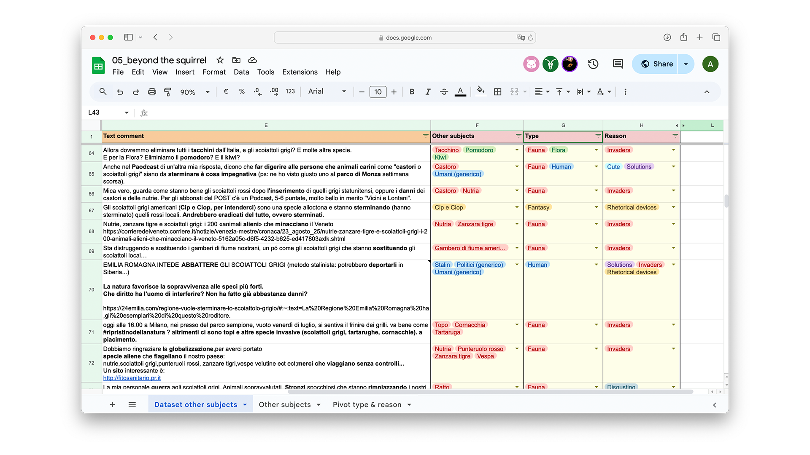
Dataset con Altri soggetti, Tipo, Ragione.
Da questi, sono stati scelti 13 commenti esemplificativi per il video che fossero esplicativi delle differenti Ragioni.
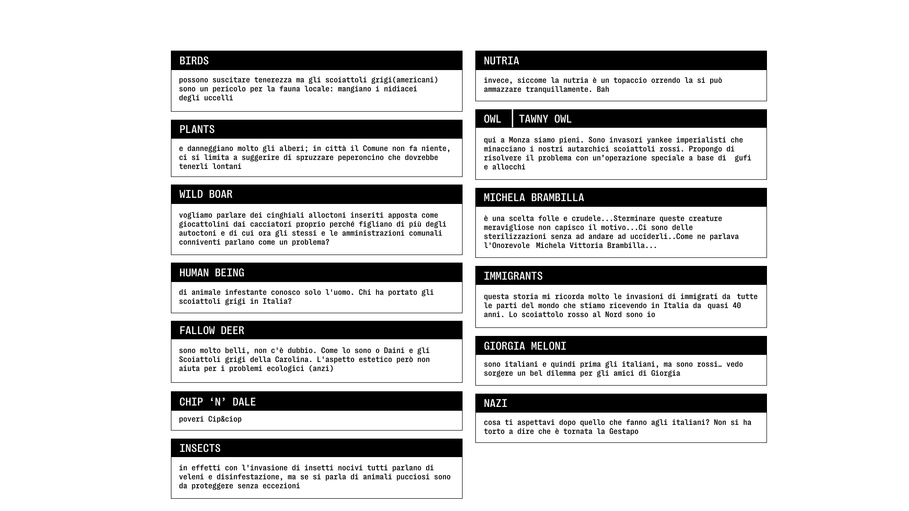
Commenti selezionati.
Generazione dell'immagini
Partendo dai soggetti individuati dai commenti, sono state generate usando MidJourney le 128 immagini..

Interfaccia di MidJourney.
Nei prompt utilizzati per ottenere le 128 immagini, è stata specificata l’inquadratura fotografica, la posizione del soggetto e lo sfondo.
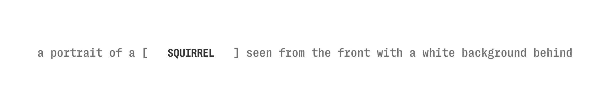
Esempio di generazione prompt.
Nei commenti selezionati i soggetti spesso indicano dei gruppi, per i quali si è deciso di generare 4 immagini che si alternano tra loro.
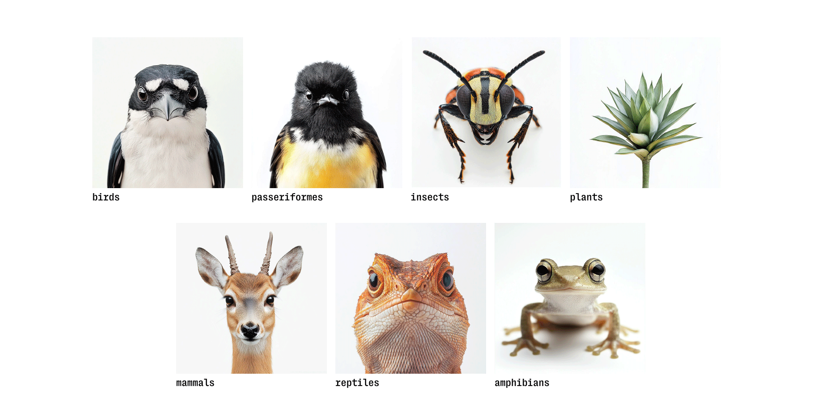
I collettivi generati.
Alcuni soggetti generati dall’AI sono caratterizzati da bias. Per questo si è deciso di realizzare dei collettivi anche per alcuni esseri umani. In questi collettivi si è cercato di selezionare delle immagini che mostrasse un uguaglianza sul piano del genere, dell’età e della nazionalità, a volte selezionando le immagini, a volte specificando nel prompt stesso.
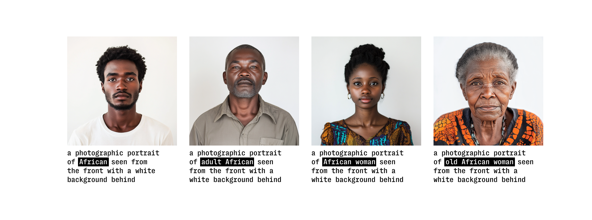
Esempio specifico del collettivo “africano” con prompt specifici utilizzati per generare ciascun soggetto.
Per i soggetti reali sono state utilizzate delle immagini provenienti da Wikimedia Commons.
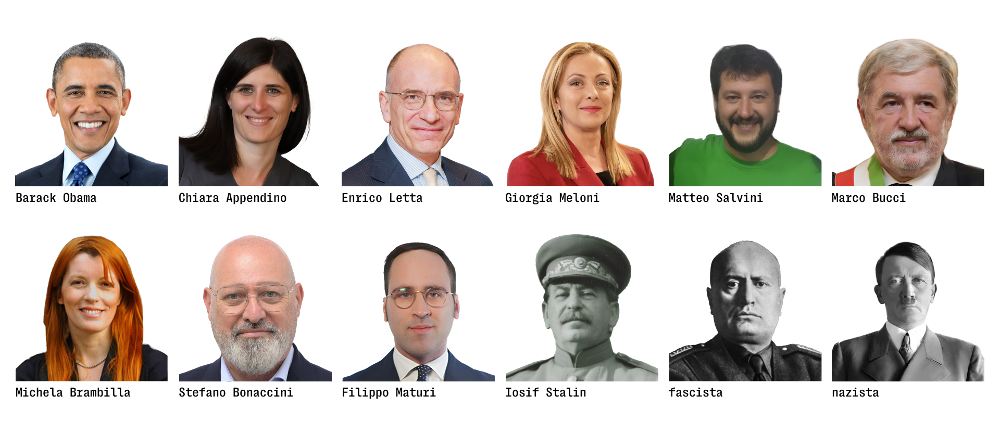
I soggetti reali provenienti da Wikimedia Commons.
Trattamento dell'immagini
Tutte le immagini sono state trattate attraverso due effetti: X ray e mezze tinte, al fine di creare un’uniformità cromatica, dare un aspetto scientifico e ovviare ad alcuni bias rimasti.
Per trasmettere l’idea di cambiamento e di problematicità nella biodiversità fatta di molteplici soggetti, è stato utilizzato come scelta stilistica il glitch.
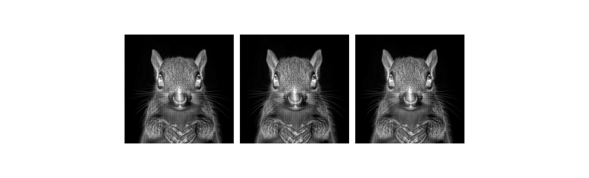
Esempio di glitch.
Costruzione della griglia
I soggetti generati sono stati poi disposti in una griglia che potesse rievocare una sorta di bestiario o di tavola periodica.
I 128 soggetti disposti in griglia.
Sono stati ordinati tenendo in considerazione sia il Tipo sia la Ragione del dataset iniziale.
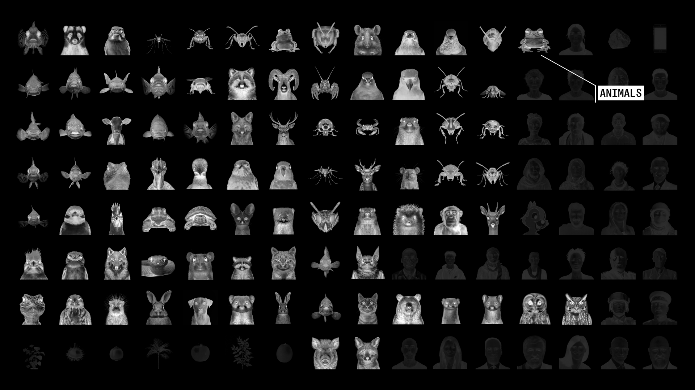
I 128 soggetti divisi per le cinque tipologie analizzate nel dataset.
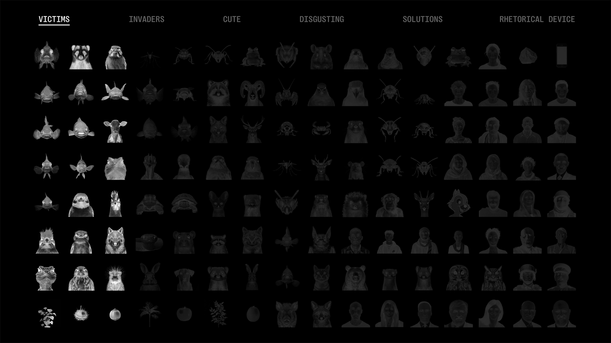
I 128 soggetti divisi per le sei ragioni analizzate nel dataset.
Il video
Il video è diviso in 3 parti principali:
- Onboarding, che informa l’utente sul contesto;
- Sei filoni narrativi, ricavati dalla colonna Ragione del dataset;
- Conclusione
Elementi del video
Dalla griglia realizzata, solo 14 soggetti vengono mostrati nel dettaglio all’interno del video.
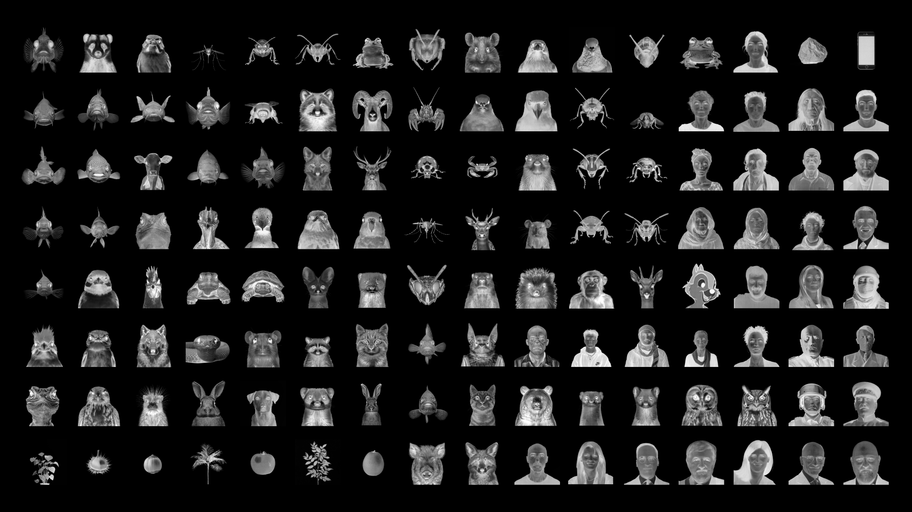
I 14 soggetti citati nel video.
Ogni attore mostrato è stato etichettato con il rispettivo nome, Tipo e numero delle menzioni nei commenti. Inoltre a fianco vi sono tutti i commenti rispettivi al soggetto di quel rispettivo filone. Le evidenziazioni aiutano a capire il motivo della categorizzazione e il soggetto.
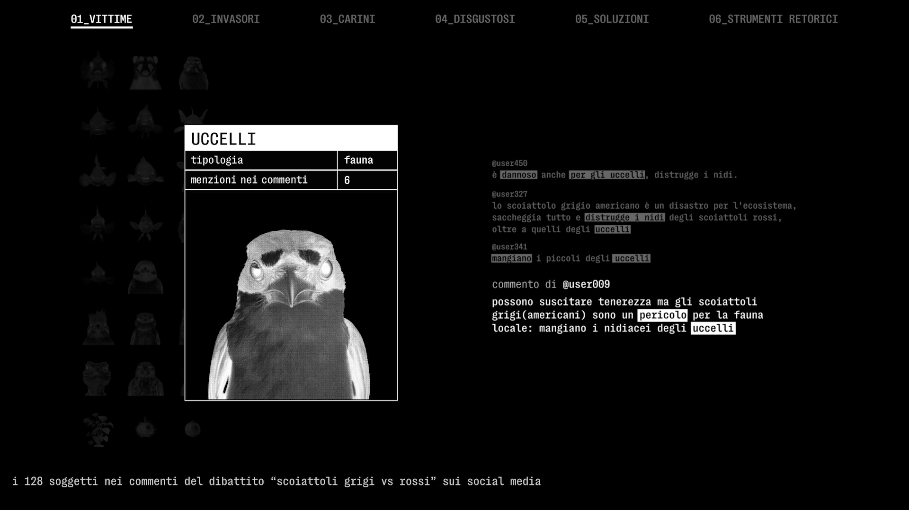
Ddettaglio di uno zoom specifico del video.
Il video è accompagnato da una parte sonora che evoca il tema dell’ecosistema digitale con rumori ambientali e digitali. I suoni naturali e digitali sono stati scaricati da Pixabay e Uppbeat. Ogni scheda del soggetto è accompagnata da un VoiceOver. Le voci sono state registrate, per avere inflessioni e mantenere maggior realismo, e poi elaborate con Adobe Audition per regolarle ed eliminare disturbi.
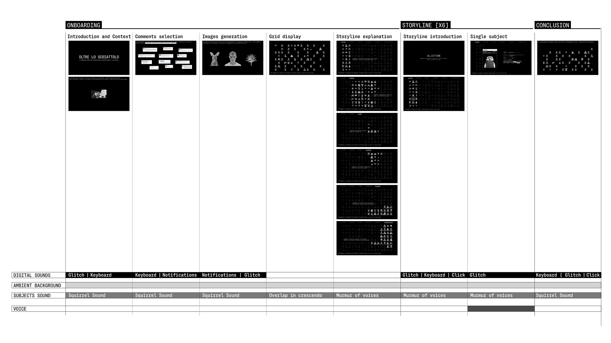
Partitura intercodice.
Il video è accompagnato da un’immagine stampata della griglia dei soggetti con i singoli nomi e categorie.